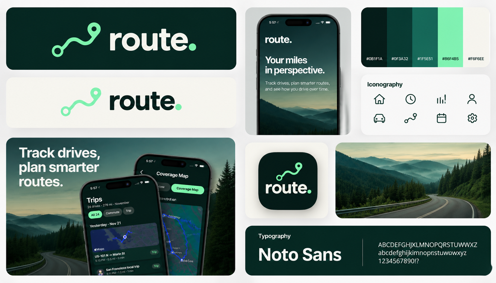

Route Tracker
From tracking miles to understanding your driving
I am independently designing and developing Route Tracker for iOS and Android, with plans to release it on Apple’s App Store and Google Play. The app combines in-app navigation, GPS recording, and driving history with fuel cost estimates. Starting with my own Bay Area commutes and road trips, I took the product from concept to a working TestFlight build, owning product direction, UX/UI, branding, implementation, and device testing.
- Role
- Product Designer & Developer
- Timeline
- November 2026–present
- Team
- Independent / solo project
- Status
- In TestFlight
- Scope
- Product direction, UX/UI, branding, implementation, and testing
The challenge
A mileage total tells you how much you drove, but leaves out the journey. I wanted to connect the routes I planned with the drives I actually took, then make that history useful through maps, trip details, and driving insights. The product needed to support three connected activities: plan a drive, record it, and understand it afterward.
Design decisions
From mileage totals to a view of the journey
Early iterations emphasized how much I drove. Reviewing the experience revealed a gap: the totals offered little context about individual journeys or the places they connected.
I redesigned the dashboard around driving insights, introduced a Coverage Map, and expanded trip summaries to show the route, duration, distance, and estimated fuel cost. Each view answers a different question: what happened on this trip, how my driving adds up, and where I have traveled.
Putting navigation first
I replaced the overview dashboard with a map-first Home screen. Destination search became the main action, so drivers could find a place and start turn-by-turn navigation as soon as they opened the app.
I brought back fuel cost estimates based on the vehicle’s MPG and showed them where drivers needed them. A live estimate stays visible while they follow a route, and a small badge on each completed trip makes the estimate easy to scan in the drive log. That kept the Home map focused on finding and starting a route.
From dashboard to map-first navigation


Making fuel estimates transparent
During user testing, drivers wanted to know how Route Tracker calculated estimated fuel costs. I added a tappable info button to the fuel estimate card in the Drive snapshot. It opens a callout that shows the calculation: divide the GPS-recorded distance by the vehicle’s MPG, then multiply by the regional weekly average price of regular gasoline. The callout shows the values and sources used for that drive so drivers can see where the estimate comes from.
I also added a manual MPG option when drivers add a vehicle. Drivers can enter the fuel economy they observe in everyday use to make future estimates better reflect what their vehicle actually uses.


Making recording behavior part of the design
A recording experience extends beyond the moment someone taps Start. It also needs to communicate whether a drive is active, paused, or finished—and preserve the result when the app is reopened.
I refined recording controls, live distance and duration, trip summaries, and saved history alongside implementation. Designing and building these states together helped me connect the visible interface to the behavior drivers depend on.
Key Experiences
Record drives with live distance and duration tracking, without manually entering every trip. Pause, resume, and finish recordings to build a personal driving history.
Search for a destination from the Home map, compare route options, and follow turn-by-turn directions in the app. The active route shows a live estimated fuel cost.
Revisit previous drives through map previews, trip details, and commute filters. Small fuel cost badges make estimates easy to scan across completed trips. Browse recorded journeys or manually add past trips to keep your history complete.
See everywhere you’ve driven on one interactive map. Visualize recorded routes and discover how your driving footprint grows over time.
Building Out the Brand
I designed the brand and marketing presence, from the logo, palette, and typography to app previews and marketing materials. I carried the same identity into the marketing website so the product and its introduction feel connected.


1 of 2
Designing and building the product
I designed and prototyped Route Tracker in Figma, then used Claude Code and Codex to help implement and troubleshoot the interface. I combined HTML, CSS, and JavaScript with Capacitor and native Swift integrations, building and testing the app in Xcode.
I connected maps, location tracking, and Live Activities, and worked through permissions, route estimates, vehicle selection, and saved data. AI supported the development workflow; I owned the product decisions, reviewed behavior, and tested the result on a physical iPhone.
User testing
I had 10 people use Route Tracker and complete tasks in the app. One specific finding was that participants wanted to stay in Route Tracker for turn-by-turn directions after choosing a destination. I added in-app navigation in response and made route search the main action on the Home map.
I tested the app during my own drives, including locked-screen recording, app switching, connectivity changes, and reopening saved trips. I also checked route planning, vehicle selection, permissions, and the relationship between drive history and statistics.
In one distance spot check, Route recorded 1.3 miles, matching the vehicle’s odometer reading. Automated checks covered calculations, date boundaries, cached-route fallback, backup validation, duplicate handling, and interface flows with mocked native bridges.
Outcome
Route Tracker is now in TestFlight with a working product loop: find a destination on the Home map, follow directions while recording, and revisit the drive through trip maps, fuel cost estimates, and driving statistics. The build also supports multiple vehicles, saved routes, and local backup tools.
The central design lesson was prioritization: more functionality created value only when the information and navigation helped explain it. Taking responsibility for both design and implementation let me refine that relationship in a functioning product.